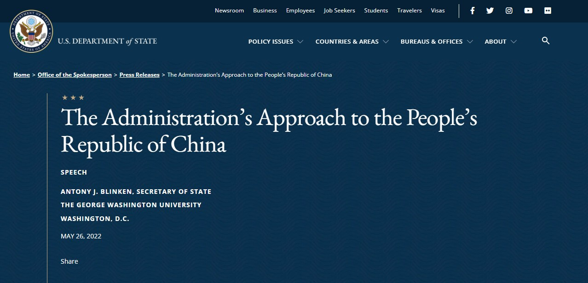
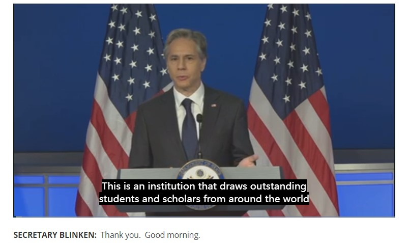

US-Sino-The Administration’s Approach to the People’s Republic of China
# The Administration’s Approach to the People’s Republic of China

Speech on the website of US department of state
# Background
Secretary of State Antony J. Blinken delivers an address outlining the Administration’s policy toward the People’s Republic of China, in Washington, D.C. on May 26, 2022.

# Full Transcript （中文来自于谷歌翻译）
SECRETARY BLINKEN: Thank you. Good morning.
It’s a real pleasure to be here at The George Washington University. This is an institution that draws outstanding students and scholars from around the world and where the most urgent challenges that we face as a country and a planet are studied and debated. So thank you for having us here today.
很高兴来到乔治华盛顿大学。这是一个吸引来自世界各地的优秀学生和学者的机构，我们作为一个国家和一个星球所面临的最紧迫的挑战被研究和辩论。所以感谢你今天让我们来到这里。
And I especially want to thank our friends at the Asia Society, dedicated to forging closer ties with the countries and people of Asia to try to enhance peace, prosperity, freedom, equality, sustainability. Thank you for hosting us today, but thank you for your leadership every day. Kevin Rudd, Wendy Cutler, Danny Russel – all colleagues, all thought leaders, but also doers, and it’s always wonderful to be with you.
我特别要感谢亚洲协会的朋友们，他们致力于与亚洲国家和人民建立更密切的联系，努力促进和平、繁荣、自由、平等和可持续发展。感谢您今天接待我们，但也感谢您每天的领导。 Kevin Rudd、Wendy Cutler、Danny Russel—— 所有的同事、所有的思想领袖，还有实干家，和你在一起总是很棒。
And I have to say I am really grateful, Senator Romney, for your presence here today – a man, a leader, that I greatly admire, a person of tremendous principle, who has been leading on the subject that we’re going to talk about today. Senator, thank you for your presence.
我不得不说，我真的很感谢罗姆尼参议员今天的光临 —— 一个我非常钦佩的人，一个领导者，一个非常有原则的人，他一直在我们将要讨论的主题上发挥领导作用关于今天。参议员，谢谢你的光临。
And I’m also delighted to see so many members of the diplomatic corps because diplomacy is the indispensable tool for shaping our shared future.
我也很高兴看到这么多外交使团成员，因为外交是塑造我们共同未来不可或缺的工具。
In the past two years we’ve come together to fight the COVID-19 pandemic and prepare for future global health emergencies, rebuild from economic shocks, from supply-chain disruptions to debt crises, and take on climate change, and reimagine an energy future that’s cleaner, more secure, and more affordable.
在过去两年中，我们齐心协力抗击 COVID-19 大流行，为未来的全球卫生紧急情况做好准备，从经济冲击、供应链中断到债务危机中重建，应对气候变化，并重新构想能源未来这更清洁、更安全、更实惠。
The common denominator across these efforts is the simple fact that none of us can meet these challenges alone. We have to face them together.
这些努力的共同点是一个简单的事实，即我们都无法独自应对这些挑战。我们必须一起面对他们。
That’s why we’ve put diplomacy back at the center of American foreign policy, to help us realize the future that Americans and people around the world seek – one where technology is used to lift people up, not suppress them; where trade and commerce support workers, raise incomes, create opportunity; where universal human rights are respected; countries are secure from coercion and aggression, and people, ideas, goods, and capital move freely; and where nations can both forge their own paths and work together effectively in common cause.
这就是为什么我们将外交重新置于美国外交政策的中心，以帮助我们实现美国人和世界各地人民所寻求的未来 —— 技术被用来提升人们而不是压制他们的未来；贸易和商业支持工人、增加收入、创造机会；尊重普遍人权的地方；国家免受胁迫和侵略，人民、思想、商品和资本自由流动；各国都可以开辟自己的道路，并在共同的事业中有效地合作。
To build that future, we must defend and reform the rules-based international order – the system of laws, agreements, principles, and institutions that the world came together to build after two world wars to manage relations between states, to prevent conflict, to uphold the rights of all people.
为了建设这样的未来，我们必须捍卫和改革以规则为基础的国际秩序 —— 世界在两次世界大战后共同建立的法律、协议、原则和制度体系，以管理国家之间的关系，防止冲突，维护所有人的权利。
Its founding documents include the UN Charter and the Universal Declaration of Human Rights, which enshrined concepts like self-determination, sovereignty, the peaceful settlement of disputes. These are not Western constructs. They are reflections of the world’s shared aspirations.
其创始文件包括《联合国宪章》和《世界人权宣言》，其中载有自决、主权、和平解决争端等概念。这些不是西方的结构。它们反映了世界的共同愿望。
In the decades since, despite daunting challenges and despite the gap between our ideals and some of the results we’ve achieved, the countries of the world have avoided another world war and armed conflict between nuclear powers. We’ve built a global economy that lifted billions of people out of poverty. We’ve advanced human rights as never before.
此后的几十年里，尽管面临着艰巨的挑战，尽管我们的理想与我们取得的一些成果之间存在差距，但世界各国还是避免了另一场世界大战和核大国之间的武装冲突。我们建立了一个全球经济，使数十亿人摆脱了贫困。我们以前所未有的方式推进了人权。
Now, as we look to the future, we want not just to sustain the international order that made so much of that progress possible, but to modernize it, to make sure that it represents the interests, the values, the hopes of all nations, big and small, from every region; and furthermore, that it can meet the challenges that we face now and will face in the future, many of which are beyond what the world could have imagined seven decades ago.
现在，当我们展望未来时，我们不仅要维持使这一进步成为可能的国际秩序，还要使其现代化，确保它代表所有国家的利益、价值观和希望，大大小小的，来自各个地区；此外，它能够应对我们现在和未来将面临的挑战，其中许多挑战超出了世界七十年前的想象。
But that outcome is not guaranteed because the foundations of the international order are under serious and sustained challenge.
但这一结果并不能保证，因为国际秩序的基础正面临严重和持续的挑战。
Russian President Vladimir Putin poses a clear and present threat. In attacking Ukraine three months ago, he also attacked the principles of sovereignty and territorial integrity, enshrined in the UN Charter, to protect all countries from being conquered or coerced. That’s why so many countries have united to oppose this aggression because they see it as a direct assault on the foundation of their own peace and security.
俄罗斯总统弗拉基米尔・普京构成了明确而现实的威胁。在三个月前袭击乌克兰时，他还攻击了载入《联合国宪章》的主权和领土完整原则，以保护所有国家不被征服或胁迫。这就是为什么这么多国家联合起来反对这种侵略，因为他们认为这是对本国和平与安全基础的直接攻击。
Ukraine is fighting valiantly to defend its people and its independence with unprecedented assistance from the United States and countries around the world. And while the war is not over, President Putin has failed to achieve a single one of his strategic aims. Instead of erasing Ukraine’s independence, he strengthened it. Instead of dividing NATO, he’s united it. Instead of asserting Russia’s strength, he’s undermined it. And instead of weakening the international order, he has brought countries together to defend it.
在美国和世界各国前所未有的援助下，乌克兰正在英勇地捍卫其人民和独立。虽然战争还没有结束，但普京总统未能实现他的一个战略目标。他没有抹去乌克兰的独立，而是加强了它。他没有分裂北约，而是团结了它。他没有宣扬俄罗斯的实力，而是削弱了它。他非但没有削弱国际秩序，反而让各国团结起来捍卫它。
Even as President Putin’s war continues, we will remain focused on the most serious long-term challenge to the international order – and that’s posed by the People’s Republic of China.
即使普京总统的战争仍在继续，我们仍将专注于对国际秩序的最严重的长期挑战 —— 这是中华人民共和国提出的。
China is the only country with both the intent to reshape the international order and, increasingly, the economic, diplomatic, military, and technological power to do it. Beijing’s vision would move us away from the universal values that have sustained so much of the world’s progress over the past 75 years.
中国是唯一一个既有重塑国际秩序意图的国家，也有越来越多的经济、外交、军事和技术力量来做到这一点。北京的愿景将使我们远离过去 75 年来维持世界进步的普遍价值观。
China is also integral to the global economy and to our ability to solve challenges from climate to COVID. Put simply, the United States and China have to deal with each other for the foreseeable future.
中国也是全球经济不可或缺的一部分，也是我们解决从气候到 COVID 等挑战的能力的一部分。简而言之，在可预见的未来，美国和中国必须相互打交道。
That’s why this is one of the most complex and consequential relationships of any that we have in the world today.
这就是为什么这是当今世界上最复杂和最重要的关系之一。
Over the last year, the Biden administration has developed and implemented a comprehensive strategy to harness our national strengths and our unmatched network of allies and partners to realize the future that we seek.
去年，拜登政府制定并实施了一项综合战略，以利用我们的国家实力以及我们无与伦比的盟友和合作伙伴网络来实现我们所寻求的未来。
We are not looking for conflict or a new Cold War. To the contrary, we’re determined to avoid both.
我们不是在寻找冲突或新的冷战。相反，我们决心避免两者。
We don’t seek to block China from its role as a major power, nor to stop China – or any other country, for that matter – from growing their economy or advancing the interests of their people.
我们不会试图阻止中国作为大国发挥作用，也不会阻止中国 —— 或任何其他国家 —— 就此而言 —— 发展经济或促进其人民的利益。
But we will defend and strengthen the international law, agreements, principles, and institutions that maintain peace and security, protect the rights of individuals and sovereign nations, and make it possible for all countries – including the United States and China – to coexist and cooperate.
但我们将捍卫和加强维护和平与安全的国际法、协议、原则和机构，保护个人和主权国家的权利，并使包括美国和中国在内的所有国家能够共存与合作.
Now, the China of today is very different from the China of 50 years ago, when President Nixon broke decades of strained relations to become the first U.S. president to visit the country.
现在，今天的中国与 50 年前的中国截然不同，当时尼克松总统打破了数十年的紧张关系，成为第一位访问该国的美国总统。
Then, China was isolated and struggling with widespread poverty and hunger.
然后，中国被孤立并与普遍的贫困和饥饿作斗争。
Now, China is a global power with extraordinary reach, influence, and ambition. It’s the second largest economy, with world-class cities and public transportation networks. It’s home to some of the world’s largest tech companies and it seeks to dominate the technologies and industries of the future. It’s rapidly modernized its military and intends to become a top tier fighting force with global reach. And it has announced its ambition to create a sphere of influence in the Indo-Pacific and to become the world’s leading power.
现在，中国是一个具有非凡影响力和雄心的全球大国。它是第二大经济体，拥有世界级的城市和公共交通网络。它是一些世界上最大的科技公司的所在地，它寻求主导未来的技术和行业。它正在迅速对其军队进行现代化改造，并打算成为具有全球影响力的顶级战斗力量。它还宣布了在印太地区建立势力范围并成为世界领先大国的雄心。
China’s transformation is due to the talent, the ingenuity, the hard work of the Chinese people. It was also made possible by the stability and opportunity that the international order provides. Arguably, no country on Earth has benefited more from that than China.
中国的转变是因为中国人民的才华、聪明才智和辛勤工作。国际秩序提供的稳定性和机遇也使这成为可能。可以说，地球上没有哪个国家比中国从中受益更多。
But rather than using its power to reinforce and revitalize the laws, the agreements, the principles, the institutions that enabled its success so that other countries can benefit from them, too, Beijing is undermining them. Under President Xi, the ruling Chinese Communist Party has become more repressive at home and more aggressive abroad.
但与其利用其权力加强和振兴使其成功的法律、协议、原则和制度，以便其他国家也能从中受益，北京正在破坏它们。在习主席的领导下，执政的中国共产党在国内变得更加压制，在国外变得更加咄咄逼人。
We see that in how Beijing has perfected mass surveillance within China and exported that technology to more than 80 countries; how its advancing unlawful maritime claims in the South China Sea, undermining peace and security, freedom of navigation, and commerce; how it’s circumventing or breaking trade rules, harming workers and companies in the United States but also around the world; and how it purports to champion sovereignty and territorial integrity while standing with governments that brazenly violate them.
我们看到北京如何完善中国境内的大规模监控并将该技术出口到 80 多个国家；它如何在南海推进非法海洋主张，破坏和平与安全、航行自由和商业；它如何规避或违反贸易规则，伤害美国乃至世界各地的工人和公司；以及它如何声称捍卫主权和领土完整，同时与公然违反它们的政府站在一起。
Even while Russia was clearly mobilizing to invade Ukraine, President Xi and President Putin declared that the friendship between their countries was – and I quote – “without limits.” Just this week, as President Biden was visiting Japan, China and Russia conducted a strategic bomber patrol together in the region.
即使在俄罗斯明显动员起来入侵乌克兰的时候，习主席和普京总统也宣称他们国家之间的友谊是 —— 我引用 ——“没有限制”。就在本周，拜登总统访问日本时，中国和俄罗斯共同在该地区进行了战略轰炸机巡逻。
Beijing’s defense of President Putin’s war to erase Ukraine’s sovereignty and secure a sphere of influence in Europe should raise alarm bells for all of us who call the Indo-Pacific region home.
北京捍卫普京总统为消除乌克兰主权和确保在欧洲建立势力范围而发动的战争，应该为我们所有以印太地区为家的人敲响警钟。
For these reasons and more, this is a charged moment for the world. And at times like these, diplomacy is vital. It’s how we make clear our profound concerns, better understand each other’s perspective, and have no doubt about each other’s intentions. We stand ready to increase our direct communication with Beijing across a full range of issues. And we hope that that can happen.
由于这些原因以及更多原因，这对世界来说是一个充满活力的时刻。在这样的时候，外交是至关重要的。这就是我们如何明确彼此的深切关切，更好地了解彼此的观点，并毫不怀疑彼此的意图。我们随时准备就各种问题加强与北京的直接沟通。我们希望这能够发生。
But we cannot rely on Beijing to change its trajectory. So we will shape the strategic environment around Beijing to advance our vision for an open, inclusive international system.
但我们不能指望北京改变它的轨迹。因此，我们将塑造北京周边的战略环境，以推进我们对开放、包容的国际体系的愿景。
President Biden believes this decade will be decisive. The actions that we take at home and with countries worldwide will determine whether our shared vision of the future will be realized.
拜登总统认为，这十年将是决定性的。我们在国内和与世界各国采取的行动将决定我们对未来的共同愿景能否实现。
To succeed in this decisive decade, the Biden administration’s strategy can be summed up in three words – “invest, align, compete.”
为了在这个决定性的十年取得成功，拜登政府的战略可以用三个词来概括 ——“投资、调整、竞争”。
We will invest in the foundations of our strength here at home – our competitiveness, our innovation, our democracy.
我们将投资于我们在国内的实力基础 —— 我们的竞争力、我们的创新、我们的民主。
We will align our efforts with our network of allies and partners, acting with common purpose and in common cause.
我们将与我们的盟友和合作伙伴网络保持一致，以共同的目的和共同的事业行事。
And harnessing these two key assets, we’ll compete with China to defend our interests and build our vision for the future.
利用这两项关键资产，我们将与中国竞争以捍卫我们的利益并建立我们对未来的愿景。
We take on this challenge with confidence. Our country is endowed with many strengths. We have peaceful neighbors, a diverse and growing population, abundant resources, the world’s reserve currency, the most powerful military on Earth, and a thriving culture of innovation and entrepreneurship that, for example, produced multiple effective vaccines now protecting people worldwide from COVID-19.
我们充满信心地迎接这一挑战。我们的国家拥有许多优势。我们拥有和平的邻居、多样化且不断增长的人口、丰富的资源、世界储备货币、地球上最强大的军队以及蓬勃发展的创新和创业文化，例如，这种文化生产出多种有效的疫苗，现在可以保护全世界的人们免受 COVID-19 的侵害。
And our open society, at its best, attracts flows of talent and investment and has a time-tested capacity for reinvention, rooted in our democracy, empowering us to meet whatever challenges we face.
而我们的开放社会，在最好的情况下，吸引人才和投资的流动，并具有经过时间考验的重塑能力，植根于我们的民主，使我们能够应对我们面临的任何挑战。
First, on investing in our strength.
首先，关于投资我们的实力。
After the Second World War, as we and our partners were building the rules-based order, our federal government was also making strategic investments in scientific research, education, infrastructure, our workforce, creating millions of middle-class jobs and decades of prosperity and technology leadership. But we took those foundations for granted. And so it’s time to get back to basics.
二战后，当我们和我们的合作伙伴建立基于规则的秩序时，我们的联邦政府也在对科学研究、教育、基础设施、我们的劳动力进行战略投资，创造了数以百万计的中产阶级就业机会和数十年的繁荣和技术领先。但我们认为这些基础是理所当然的。所以是时候回归基础了。
The Biden administration is making far-reaching investments in our core sources of national strength – starting with a modern industrial strategy to sustain and expand our economic and technological influence, make our economy and supply chains more resilient, sharpen our competitive edge.
拜登政府正在对我们的核心国力来源进行深远的投资 —— 从现代产业战略开始，以维持和扩大我们的经济和技术影响力，使我们的经济和供应链更具弹性，增强我们的竞争优势。
Last year, President Biden signed into law the largest infrastructure investment in our history: to modernize our highways, our ports, airports, rail, and bridges; to move goods to market faster, to boost our productivity; to expand high-speed internet to every corner of the country; to draw more businesses and more jobs to more parts of America.
去年，拜登总统签署了我们历史上最大的基础设施投资的法律：对我们的高速公路、港口、机场、铁路和桥梁进行现代化改造；更快地将货物推向市场，提高我们的生产力；将高速互联网扩展到全国每个角落；为美国更多地区吸引更多企业和更多就业机会。
We’re making strategic investments in education and worker training, so that American workers – the best in the world – can design, build, and operate the technologies of the future.
我们正在对教育和工人培训进行战略投资，以便美国工人 —— 世界上最好的 —— 能够设计、建造和操作未来的技术。
Because our industrial strategy centers on technology, we want to invest in research, development, advanced manufacturing. Sixty years ago, our government spent more than twice as much on research as a percentage of our economy as we do now – investments that, in turn, catalyzed private-sector innovation. It’s how we won the space race, invented the semiconductor, built the internet. We used to rank first in the world in R&D as a proportion of our GDP – now we’re ninth. Meanwhile, China has risen from eighth place to second.
因为我们的产业战略以技术为中心，我们希望投资于研究、开发和先进制造。六十年前，我们的政府在研究上的投入占我们经济的比例是现在的两倍多 —— 这些投资反过来又促进了私营部门的创新。这就是我们赢得太空竞赛、发明半导体、建立互联网的方式。过去，我们的研发占 GDP 的比例在世界上排名第一 —— 现在我们排名第九。与此同时，中国从第八位上升到第二位。
With bipartisan congressional support, we’ll reverse these trends and make historic investments in research and innovation, including in fields like artificial intelligence, biotechnology, quantum computing. These are areas that Beijing is determined to lead – but given America’s advantages, the competition is ours to lose, not only in terms of developing new technologies but also in shaping how they’re used around the world, so that they’re rooted in democratic values, not authoritarian ones.
在两党国会的支持下，我们将扭转这些趋势，并对研究和创新进行历史性投资，包括人工智能、生物技术、量子计算等领域。这些是北京决心领导的领域 —— 但鉴于美国的优势，竞争是我们输的，不仅在开发新技术方面，而且在塑造它们在世界各地的使用方式方面，以便它们植根于民主价值观，而不是专制价值观。
The leadership – Senator Romney and others – the House and Senate have passed bills to support this agenda, including billions to produce semiconductors here and to strengthen other critical supply chains. Now we need Congress to send the legislation to the President for his signature.
领导层 —— 参议员罗姆尼和其他人 —— 众议院和参议院已经通过了支持这一议程的法案，包括数十亿美元在这里生产半导体并加强其他关键供应链。现在我们需要国会将立法送交总统签署。
We can get this done, and it can’t wait – supply chains are moving now, and if we don’t draw them here, they’ll be established somewhere else. As President Biden has said, the Chinese Communist Party is lobbying against this legislation – because there’s no better way to enhance our global standing and influence than to deliver on our domestic renewal. These investments will not only make America stronger; they’ll make us a stronger partner and ally as well.
我们可以做到这一点，它已经迫不及待了 —— 供应链现在正在移动，如果我们不把它们拉到这里，它们就会在其他地方建立起来。正如拜登总统所说，中国共产党正在游说反对这项立法 —— 因为没有比实现国内复兴更好的方式来提高我们的全球地位和影响力。这些投资不仅会使美国变得更强大；他们将使我们成为更强大的合作伙伴和盟友。
One of the most powerful, even magical things about the United States is that we have long been a destination for talented, driven people from every part of the planet. That includes millions of students from China, who have enriched our communities and forged lifelong bonds with Americans. Last year, despite the pandemic, we issued more than 100,000 visas to Chinese students in just four months – our highest rate ever. We’re thrilled that they’ve chosen to study in the United States – we’re lucky to have them.
美国最强大，甚至最神奇的事情之一是，长期以来，我们一直是来自地球各地有才华、有动力的人的目的地。其中包括数百万来自中国的学生，他们丰富了我们的社区并与美国人建立了终生的纽带。去年，尽管发生了大流行，我们在短短四个月内就向中国学生发放了超过 100,000 个签证，这是我们有史以来的最高比率。我们很高兴他们选择在美国学习 —— 我们很幸运拥有他们。
And we’re lucky when the best global talent not only studies here but stays here – as more than 80 percent of Chinese students who pursue science and technology PhDs in the United States have done in recent years. They help drive innovation here at home, and that benefits all of us. We can stay vigilant about our national security without closing our doors.
我们很幸运，全球最优秀的人才不仅在这里学习，而且留在这里 —— 正如近年来在美国攻读科学和技术博士学位的中国学生中超过 80% 所做的那样。他们帮助推动国内的创新，这对我们所有人都有好处。我们可以在不关门的情况下对我们的国家安全保持警惕。
We also know from our history that when we’re managing a challenging relationship with another government, people from that country or with that heritage can be made to feel that they don’t belong here – or that they’re our adversaries. Nothing could be further from the truth. Chinese Americans made invaluable contributions to our country; they’ve done so for generations. Mistreating someone of Chinese descent goes against everything we stand for as a country – whether a Chinese national visiting or living here, or a Chinese American, or any other Asian American whose claim to this country is equal to anyone else’s. Racism and hate have no place in a nation built by generations of immigrants to fulfill the promise of opportunity for all.
从我们的历史中我们也知道，当我们与另一个政府管理具有挑战性的关系时，来自那个国家或具有这种传统的人可能会觉得他们不属于这里 —— 或者他们是我们的对手。没有东西会离事实很远。华裔美国人为我们的国家做出了宝贵的贡献；他们世代相传。虐待华裔人士违背了我们作为一个国家所代表的一切 —— 无论是访问或居住在这里的中国人，还是华裔美国人，或任何其他对这个国家拥有同等权利的亚裔美国人。种族主义和仇恨在一代代移民建立的国家中没有立足之地，以实现人人享有机会的承诺。
We have profound differences with the Chinese Communist Party and the Chinese Government. But those differences are between governments and systems – not between our people. The American people have great respect for the Chinese people. We respect their achievements, their history, their culture. We deeply value the ties of family and friendship that connect us. And we sincerely wish for our governments to work together on issues that matter to their lives and to the lives of Americans, and for that matter the lives of people around the world.
我们与中国共产党和中国政府有着深刻的分歧。但这些差异存在于政府和系统之间，而不是我们的人民之间。美国人民非常尊重中国人民。我们尊重他们的成就、他们的历史和他们的文化。我们非常重视将我们联系在一起的家庭和友谊纽带。我们真诚地希望我们的政府在关系到他们的生活和美国人的生活以及世界各地人民的生活的问题上共同努力。
There’s another core source of national strength that we’ll be relying on in this decisive decade: our democracy.
在这个决定性的十年里，我们将依赖另一个核心国力来源：我们的民主。
A hundred years ago, if asked what constitutes the wealth of a nation, we might list the expanse of our land, the size of our population, the strength of our military, the abundance of our natural resources. And thankfully, we’re still wealthy in all of those attributes. But more than ever, in this 21st century, the true wealth of a nation is found in our people – our human resources – and our ability to unleash their full potential.
一百年前，如果问什么是一个国家的财富，我们可能会列出我们的国土面积、人口规模、军队实力、自然资源丰富程度。值得庆幸的是，我们在所有这些属性上仍然很富有。但是，在这个 21 世纪，一个国家的真正财富比以往任何时候都更重要的是我们的人民 —— 我们的人力资源 —— 以及我们释放他们全部潜力的能力。
We do that with our democratic system. We debate, we argue, we disagree, we challenge each other, including our elected leaders. We deal with our deficiencies openly; we don’t pretend they don’t exist or sweep them under the rug. And though progress can feel painfully slow, can be difficult and ugly, by and large we consistently work toward a society where people from all backgrounds can flourish, guided by national values that unite, motivate, and uplift us.
我们用我们的民主制度来做到这一点。 We debate, we argue, we disagree, we challenge each other, including our elected leaders. 我们公开处理我们的不足；我们不会假装它们不存在或将它们扫在地毯下。尽管进展可能会让人感到痛苦的缓慢、困难和丑陋，但总的来说，我们始终致力于建设一个让来自不同背景的人们都能在团结、激励和提升我们的国家价值观指导下蓬勃发展的社会。
We are not perfect. But at our best, we always strive to be – in the words of our Constitution – a more perfect union. Our democracy is designed to make that happen.
我们并不完美。但在我们最好的情况下，我们总是努力成为 —— 用我们宪法的话说 —— 一个更完美的联盟。我们的民主旨在实现这一目标。
That’s what the American people and the American model offer, and it’s one of the most powerful assets in this contest.
这就是美国人民和美国模式所提供的，也是这场竞赛中最强大的资产之一。
Now, Beijing believes that its model is the better one; that a party-led centralized system is more efficient, less messy, ultimately superior to democracy. We do not seek to transform China’s political system. Our task is to prove once again that democracy can meet urgent challenges, create opportunity, advance human dignity; that the future belongs to those who believe in freedom and that all countries will be free to chart their own paths without coercion.
现在，北京认为它的模式更好。党领导的中央集权制度更有效，更少混乱，最终优于民主。我们不寻求改变中国的政治制度。我们的任务是再次证明民主能够应对紧迫的挑战、创造机会、促进人类尊严；未来属于那些相信自由的人，所有国家都可以在不受胁迫的情况下自由规划自己的道路。
The second piece of our strategy is aligning with our allies and partners to advance a shared vision for the future.
我们战略的第二部分是与我们的盟友和合作伙伴保持一致，以推进对未来的共同愿景。
From day one, the Biden administration has worked to re-energize America’s unmatched network of alliances and partnerships and to re-engage in international institutions. We’re encouraging partners to work with each other, and through regional and global organizations. And we’re standing up new coalitions to deliver for our people and meet the tests of the century ahead.
从第一天起，拜登政府就致力于重新激活美国无与伦比的联盟和伙伴关系网络，并重新参与国际机构。我们鼓励合作伙伴通过区域和全球组织相互合作。我们正在建立新的联盟，为我们的人民提供服务并迎接未来世纪的考验。
Nowhere is this more true than in the Indo-Pacific region, where our relationships, including our treaty alliances, are among our strongest in the world.
这一点在印太地区更是如此，我们的关系，包括我们的条约联盟，是世界上最强大的关系之一。
The United States shares the vision that countries and people across the region hold: one of a free and open Indo-Pacific where rules are developed transparently and applied fairly; where countries are free to make their own sovereign decisions; where goods, ideas, and people flow freely across land, sky, cyberspace, the open seas, and governance is responsive to the people.
美国与该地区的国家和人民持有共同的愿景：一个自由开放的印太地区，规则制定透明并公平适用；各国可以自由做出自己的主权决定；货物、思想和人员在陆地、天空、网络空间、公海自由流动，治理响应人民。
President Biden reinforced these priorities this week with his trip to the region, where he reaffirmed our vital security alliances with South Korea and Japan, and deepened our economic and technology cooperation with both countries.
拜登总统本周在该地区的访问中强调了这些优先事项，他重申了我们与韩国和日本的重要安全联盟，并深化了我们与两国的经济和技术合作。
He launched the Indo-Pacific Economic Framework for Prosperity, a first-of-its-kind initiative for the region. It will, in the President’s words, “help all our countries’ economies grow faster and fairer.” IPEF, as we call it, renews American economic leadership but adapts it for the 21st century by addressing cutting-edge issues like the digital economy, supply chains, clean energy, infrastructure, and corruption. A dozen countries, including India, have already joined. Together, IPEF members make up more than a third of the global economy.
他发起了 “印太经济繁荣框架”，这是该地区首创的倡议。用总统的话来说，它将 “帮助我们所有国家的经济增长得更快、更公平”。正如我们所说，IPEF 更新了美国的经济领导地位，但通过解决数字经济、供应链、清洁能源、基础设施和腐败等前沿问题使其适应 21 世纪。包括印度在内的十几个国家已经加入。 IPEF 成员合计占全球经济的三分之一以上。
The President also took part in the leaders’ summit of the Quad countries – Australia, Japan, India, the United States. The Quad never met at the leader level before President Biden took office. Since he convened the first leaders’ meeting last year, the Quad has held four summits. It’s become a leading regional team. This week, it launched a new Indo-Pacific Partnership for Maritime Domain Awareness, so our partners across the region can better monitor the waters near their shores to address illegal fishing and protect their maritime rights and their sovereignty.
总统还参加了四国领导人峰会 —— 澳大利亚、日本、印度和美国。在拜登总统上任之前，四方从未在领导人层面举行过会议。自他去年召开第一次领导人会议以来，四方已举行了四次峰会。它已成为领先的区域团队。本周，它启动了一项新的印太海洋领域意识伙伴关系，以便我们在该地区的合作伙伴能够更好地监测其海岸附近的水域，以解决非法捕鱼问题并保护其海洋权利和主权。
We’re reinvigorating our partnership with ASEAN. Earlier this month, we hosted the U.S.-ASEAN Summit to take on urgent issues like public health and the climate crisis together. This week, seven ASEAN countries became founding members of the Indo-Pacific Economic Framework. And we’re building bridges among our Indo-Pacific and European partners, including by inviting Asian allies to the NATO summit in Madrid next month.
我们正在重振与东盟的伙伴关系。本月早些时候，我们主办了美国 - 东盟峰会，共同探讨公共卫生和气候危机等紧迫问题。本周，七个东盟国家成为印太经济框架的创始成员。我们正在印度 - 太平洋和欧洲伙伴之间架起桥梁，包括邀请亚洲盟国参加下个月在马德里举行的北约峰会。
We’re enhancing peace and stability in the Indo-Pacific; for example, with the new security partnership between Australia, the United Kingdom, and the United States, known as AUKUS.
我们正在加强印太地区的和平与稳定；例如，澳大利亚、英国和美国之间的新安全伙伴关系，称为 AUKUS。
And we’re helping countries in the region and around the world defeat COVID-19. To date, the United States has provided nearly $20 billion to the global pandemic response. That includes more than 540 million doses of safe and effective vaccines donated – not sold – with no political strings attached, on our way to 1.2 billion doses worldwide. And we’re coordinating with a group of 19 countries in a global action plan to get shots into arms.
我们正在帮助该地区和世界各地的国家战胜 COVID-19。迄今为止，美国已为全球大流行应对提供了近 200 亿美元。这包括捐赠的超过 5.4 亿剂安全有效的疫苗 —— 未售出 —— 不附加任何政治条件，我们正在向全球提供 12 亿剂疫苗。我们正在与一个由 19 个国家组成的小组进行协调，制定一项全球行动计划，让武器成为武器。
As a result of all of this diplomacy, we are more aligned with partners across the Indo-Pacific, and we’re working in a more coordinated way toward our shared goals.
由于所有这些外交，我们与印太地区的合作伙伴更加一致，我们正在以更加协调的方式朝着我们的共同目标努力。
We’ve also deepened our alignment across the Atlantic. We launched the U.S.-EU Trade and Technology Council last year, marshaling the combined weight of nearly 50 percent of the world’s GDP. Last week, I joined Secretary Raimondo, Ambassador Tai, and our European Commission counterparts for our second meeting to work together on new technology standards, coordinate on investment screening and export controls, strengthen supply chains, boost green tech, and improve food security and digital infrastructure in developing countries.
我们还在大西洋彼岸加深了我们的联盟。去年，我们启动了美国 - 欧盟贸易和技术委员会，其总和占全球 GDP 的近 50%。上周，我与雷蒙多部长、戴大使和我们的欧盟委员会同行一起参加了我们的第二次会议，共同制定新技术标准、协调投资筛选和出口管制、加强供应链、促进绿色科技、改善粮食安全和数字化发展中国家的基础设施。
Meanwhile, we and our European partners set aside 17 years of litigation about aircraft; now, instead of arguing with each other, we’re working to secure a level playing field for our companies and workers in that sector.
同时，我们和我们的欧洲合作伙伴搁置了长达 17 年的飞机诉讼；现在，我们不再互相争论，而是努力为我们的公司和该行业的工人确保公平的竞争环境。
Similarly, we worked with the European Union and others to resolve a dispute on steel and aluminum imports, and now we’re coming together around a shared vision on higher climate standards and protecting our workers and industries from Beijing’s deliberate efforts to distort the market to its advantage.
同样，我们与欧盟和其他国家合作解决钢铁和铝进口争端，现在我们围绕更高的气候标准和保护我们的工人和行业免受北京蓄意扭曲市场的行为的共同愿景而走到一起。它的优势。
We’re partnering with the European Union to protect our citizens’ privacy while strengthening a shared digital economy that depends on vast flows of data.
我们正在与欧盟合作，以保护我们公民的隐私，同时加强依赖于大量数据流的共享数字经济。
With the G20, we reached a landmark deal on a global minimum tax to halt the race to the bottom, make sure that big corporations pay their fair share, and give countries even more resources to invest in their people. More than 130 countries have signed on so far.
通过 G20，我们就全球最低税收达成了一项具有里程碑意义的协议，以制止逐底竞争，确保大公司支付其公平份额，并为各国提供更多资源来投资于本国人民。迄今为止，已有 130 多个国家签署。
We and our G7 partners are pursuing a coordinated, high-standard, and transparent approach to meet the enormous infrastructure needs in developing countries.
我们和我们的 G7 合作伙伴正在寻求一种协调一致、高标准和透明的方法，以满足发展中国家巨大的基础设施需求。
We’ve convened global summits on defeating COVID-19 and renewing global democracy, and rejoined the UN Human Rights Council and the WHO, the World Health Organization.
我们召开了关于战胜 COVID-19 和更新全球民主的全球峰会，并重新加入了联合国人权理事会和世界卫生组织。
And at a moment of great testing, we and our allies have re-energized NATO, which is now as strong as ever.
在面临巨大考验的时刻，我们和我们的盟友重新为北约注入了活力，它现在一如既往地强大。
These actions are all aimed at defending and, as necessary, reforming the rules-based order that should benefit all nations. We want to lead a race to the top on tech, on climate, infrastructure, global health, and inclusive economic growth. And we want to strengthen a system in which as many countries as possible can come together to cooperate effectively, resolve differences peacefully, write their own futures as sovereign equals.
这些行动都旨在捍卫并在必要时改革应使所有国家受益的基于规则的秩序。我们希望在科技、气候、基础设施、全球健康和包容性经济增长方面引领竞争。我们希望加强一个体系，让尽可能多的国家能够团结起来进行有效合作，和平解决分歧，以主权平等的身份书写自己的未来。
Our diplomacy is based on partnership and respect for each other’s interests. We don’t expect every country to have the exact same assessment of China as we do. We know that many countries – including the United States – have vital economic or people-to-people ties with China that they want to preserve. This is not about forcing countries to choose. It’s about giving them a choice, so that, for example, the only option isn’t an opaque investment that leaves countries in debt, stokes corruption, harms the environment, fails to create local jobs or growth, and compromises countries’ exercise of their sovereignty. We’ve heard firsthand about buyer’s remorse that these deals can leave behind.
我们的外交建立在伙伴关系和尊重彼此利益的基础上。我们不期望每个国家对中国的评价都和我们一样。我们知道，包括美国在内的许多国家都希望与中国保持重要的经济或人文联系。这不是强迫各国做出选择。这是关于给他们一个选择，例如，唯一的选择不是不透明的投资，这种投资不会让国家陷入债务、助长腐败、损害环境、无法创造当地就业或增长，并损害各国行使他们的权力。主权。我们已经亲耳听到了买家对这些交易可能会留下的悔恨。
At every step, we’re consulting with our partners, listening to them, taking their concerns to heart, building solutions that address their unique challenges and priorities.
在每一步，我们都在与我们的合作伙伴协商，倾听他们的意见，将他们的担忧放在心上，构建解决他们独特挑战和优先事项的解决方案。
There is growing convergence about the need to approach relations with Beijing with more realism. Many of our partners already know from painful experience how Beijing can come down hard when they make choices that it dislikes. Like last spring, when Beijing cut off Chinese students and tourists from traveling to Australia and imposed an 80 percent tariff on Australian barley exports, because Australia’s Government called for an independent inquiry into COVID’s origin. Or last November, when Chinese Coast Guard vessels used water cannons to stop a resupply of a Philippine navy ship in the South China Sea. Actions like these remind the world of how Beijing can retaliate against perceived opposition.
人们越来越一致地认为，需要以更加现实的态度处理与北京的关系。我们的许多合作伙伴已经从痛苦的经历中知道，当他们做出不喜欢的选择时，北京会如何严厉打击。就像去年春天一样，当时北京禁止中国学生和游客前往澳大利亚，并对澳大利亚大麦出口征收 80% 的关税，因为澳大利亚政府呼吁对 COVID 的来源进行独立调查。或者去年 11 月，中国海岸警卫队船只使用高压水炮阻止一艘菲律宾海军舰艇在南中国海的补给。此类行动提醒世界北京如何报复被察觉的反对派。
There’s another area of alignment we share with our allies and partners: human rights.
我们与盟友和合作伙伴还有另一个共同点：人权。
The United States stands with countries and people around the world against the genocide and crimes against humanity happening in the Xinjiang region, where more than a million people have been placed in detention camps because of their ethnic and religious identity.
美国与世界各国和人民站在一起，反对在新疆地区发生的种族灭绝和反人类罪行，超过一百万人因种族和宗教身份被关押在拘留营。
We stand together on Tibet, where the authorities continue to wage a brutal campaign against Tibetans and their culture, language, and religious traditions, and in Hong Kong, where the Chinese Communist Party has imposed harsh anti-democratic measures under the guise of national security.
我们在西藏站在一起，那里当局继续对藏人及其文化、语言和宗教传统进行残酷的运动，在香港，中国共产党以国家安全为幌子实施严厉的反民主措施.
Now, Beijing insists that these are somehow internal matters that others have no right to raise. That is wrong. Its treatment of ethnic and religious minorities in Xinjiang and Tibet, along with many other actions, go against the core tenets of the UN Charter that Beijing constantly cites and the Universal Declaration of Human Rights that all countries are meant to adhere to.
现在，北京坚称这些在某种程度上是其他人无权提出的内部事务。那是错的。它对待新疆和西藏少数民族和宗教少数群体的做法以及许多其他行为违背了北京不断引用的《联合国宪章》的核心原则和所有国家都应该遵守的《世界人权宣言》。
Beijing’s quashing of freedom in Hong Kong violates its handover commitments, enshrined in a treaty deposited at the United Nations.
北京取消香港的自由违反了其移交给联合国的条约所载的承诺。
We’ll continue to raise these issues and call for change – not to stand against China, but to stand up for peace, security, and human dignity.
我们将继续提出这些问题并呼吁改变 —— 不是反对中国，而是捍卫和平、安全和人类尊严。
That brings us to the third element of our strategy. Thanks to increased investments at home and greater alignment with allies and partners, we are well-positioned to outcompete China in key areas.
这将我们带到了我们战略的第三个要素。由于增加了对国内的投资以及与盟友和合作伙伴的更紧密的合作，我们已做好准备在关键领域超越中国。
For example, Beijing wants to put itself at the center of global innovation and manufacturing, increase other countries’ technological dependence, and then use that dependence to impose its foreign policy preferences. And Beijing is going to great lengths to win this contest – for example, taking advantage of the openness of our economies to spy, to hack, to steal technology and know-how to advance its military innovation and entrench its surveillance state.
例如，北京希望将自己置于全球创新和制造业的中心，增加其他国家的技术依赖，然后利用这种依赖强加其外交政策偏好。北京将不遗余力地赢得这场竞赛 —— 例如，利用我们经济的开放性进行间谍活动、黑客攻击、窃取技术和诀窍，以推进其军事创新并巩固其监视状态。
So as we make sure the next wave of innovation is unleashed by the United States and our allies and partners, we’ll also protect ourselves against efforts to siphon off our ingenuity or imperil our security.
因此，当我们确保美国及其盟国和合作伙伴释放下一波创新浪潮时，我们还将保护自己免受窃取我们的聪明才智或危及我们安全的努力。
We’re sharpening our tools to safeguard our technological competitiveness. That includes new and stronger export controls to make sure our critical innovations don’t end up in the wrong hands; greater protections for academic research, to create an open, secure, and supportive environment for science; better cyber defenses; stronger security for sensitive data; and sharper investment screening measures to defend companies and countries against Beijing’s efforts to gain access to sensitive technologies, data, or critical infrastructure; compromise our supply chains; or dominate key strategic sectors.
我们正在磨砺我们的工具来保护我们的技术竞争力。这包括新的和更强有力的出口管制，以确保我们的关键创新不会落入坏人之手；加强对学术研究的保护，为科学创造一个开放、安全和支持性的环境；更好的网络防御；加强敏感数据的安全性；以及更严格的投资筛选措施，以保护公司和国家免受北京获取敏感技术、数据或关键基础设施的努力；破坏我们的供应链；或主导关键战略领域。
We believe – and we expect the business community to understand – that the price of admission to China’s market must not be the sacrifice of our core values or long-term competitive and technological advantages. We’re counting on businesses to pursue growth responsibly, assess risk soberly, and work with us not only to protect but to strengthen our national security.
我们相信 —— 我们希望商界能够理解 —— 进入中国市场的代价绝不能是牺牲我们的核心价值观或长期竞争和技术优势。我们指望企业负责任地追求增长，清醒地评估风险，并与我们合作，不仅保护而且加强我们的国家安全。
For too long, Chinese companies have enjoyed far greater access to our markets than our companies have in China. For example, Americans who want to read the China Daily or communicate via WeChat are free to do so, but The New York Times and Twitter are prohibited for the Chinese people, except those working for the government who use these platforms to spread propaganda and disinformation. American companies operating in China have been subject to systematic forced technology transfer, while Chinese companies in America have been protected by our rule of law. Chinese filmmakers can freely market their movies to American theater owners without any censorship by the U.S. Government, but Beijing strictly limits the number of foreign movies allowed in the Chinese market, and those that are allowed are subjected to heavy-handed political censorship. China’s businesses in the United States don’t fear using our impartial legal system to defend their rights – in fact, they’re frequently in court asserting claims against the United States Government. The same isn’t true for foreign firms in China.
长期以来，中国公司进入我们市场的机会远远超过我们在中国的公司。例如，美国人想阅读《中国日报》或通过微信进行交流是免费的，但中国人禁止使用《纽约时报》和推特，除非为政府工作的人利用这些平台传播宣传和虚假信息。在华经营的美国公司一直受到系统性的强制技术转让，而在美的中国公司则受到我们法治的保护。中国电影人可以在不受美国政府审查的情况下向美国影院所有者自由推销他们的电影，但北京严格限制允许进入中国市场的外国电影的数量，允许的电影受到严厉的政治审查。在美国的中国企业并不害怕利用我们公正的法律体系来捍卫自己的权利 —— 事实上，他们经常在法庭上对美国政府提出索赔。对于在中国的外国公司来说，情况并非如此。
This lack of reciprocity is unacceptable and it’s unsustainable.
这种缺乏互惠的做法是不可接受的，也是不可持续的。
Or consider what happened in the steel market. Beijing directed massive over-investment by Chinese companies, which then flooded the global market with cheap steel. Unlike U.S. companies and other market-oriented firms, Chinese companies don’t need to make a profit – they just get another injection of state-owned bank credit when funds are running low. Plus, they do little to control pollution or protect the rights of their workers, which also keeps costs down. As a consequence, China now accounts for more than half of global steel production, driving U.S. companies – as well as factories in India, Mexico, Indonesia, Europe, and elsewhere – out of the market.
或者考虑一下钢铁市场发生了什么。北京指示中国公司进行大规模的过度投资，然后用廉价钢铁充斥全球市场。与美国公司和其他市场化公司不同，中国公司不需要盈利 —— 它们只是在资金不足时再注入国有银行信贷。此外，他们几乎没有控制污染或保护工人的权利，这也降低了成本。因此，中国现在占全球钢铁产量的一半以上，迫使美国公司以及印度、墨西哥、印度尼西亚、欧洲和其他地方的工厂退出市场。
We’ve seen this same model when it comes to solar panels, electric car batteries – key sectors of the 21st century economy that we cannot allow to become completely dependent on China.
我们在太阳能电池板、电动汽车电池 ——21 世纪经济的关键领域 —— 我们不能让它们完全依赖中国时看到了同样的模式。
Economic manipulations like these have cost American workers millions of jobs. And they’ve harmed the workers and firms of countries around the world. We will push back on market-distorting policies and practices, like subsidies and market access barriers, which China’s government has used for years to gain competitive advantage. We’ll boost supply chain security and resilience by reshoring production or sourcing materials from other countries in sensitive sectors like pharmaceuticals and critical minerals, so that we’re not dependent on any one supplier. We’ll stand together with others against economic coercion and intimidation. And we will work to ensure that U.S. companies don’t engage in commerce that facilitates or benefits from human rights abuses, including forced labor.
像这样的经济操纵已经让美国工人失去了数百万个工作岗位。他们伤害了世界各国的工人和公司。我们将抵制扭曲市场的政策和做法，如补贴和市场准入壁垒，中国政府多年来一直利用这些政策和做法来获得竞争优势。我们将通过在制药和关键矿产等敏感行业将生产或从其他国家采购材料来提高供应链的安全性和弹性，这样我们就不会依赖任何一家供应商。我们将与其他人站在一起反对经济胁迫和恐吓。我们将努力确保美国公司不从事促进或受益于侵犯人权行为（包括强迫劳动）的商业活动。
In short, we’ll fight for American workers and industry with every tool we have – just as we know that our partners will fight for their workers.
简而言之，我们将用我们拥有的一切工具为美国工人和工业而战 —— 正如我们知道我们的合作伙伴将为他们的工人而战一样。
The United States does not want to sever China’s economy from ours or from the global economy – though Beijing, despite its rhetoric, is pursuing asymmetric decoupling, seeking to make China less dependent on the world and the world more dependent on China. For our part, we want trade and investment as long as they’re fair and don’t jeopardize our national security. China has formidable economic resources, including a highly capable workforce. We’re confident that our workers, our companies will compete successfully – and we welcome that competition – on a level playing field.
美国不想将中国经济与我们的经济或全球经济割裂 —— 尽管北京尽管言辞激烈，但仍在寻求不对称的脱钩，试图让中国减少对世界的依赖，让世界更加依赖中国。就我们而言，我们想要贸易和投资，只要它们是公平的并且不会危害我们的国家安全。中国拥有强大的经济资源，包括高素质的劳动力。我们相信，我们的员工、我们的公司将在公平的竞争环境中成功竞争 —— 我们欢迎这种竞争。
So as we push back responsibly on unfair technology and economic practices, we’ll work to maintain economic and people-to-people ties connecting the United States and China, consistent with our interests and our values. Beijing may not be willing to change its behavior. But if it takes concrete action to address the concerns that we and many other countries have voiced, we will respond positively.
因此，当我们以负责任的方式抵制不公平的技术和经济做法时，我们将努力维护连接美国和中国的经济和民间联系，这符合我们的利益和价值观。北京可能不愿意改变自己的行为。但如果采取具体行动解决我们和许多其他国家表达的关切，我们将作出积极回应。
Competition need not lead to conflict. We do not seek it. We will work to avoid it. But we will defend our interests against any threat.
竞争不一定会导致冲突。我们不寻求它。我们将努力避免它。但我们将捍卫我们的利益免受任何威胁。
To that end, President Biden has instructed the Department of Defense to hold China as its pacing challenge, to ensure that our military stays ahead. We’ll seek to preserve peace through a new approach that we call “integrated deterrence” – bringing in allies and partners; working across the conventional, the nuclear, space, and informational domains; drawing on our reinforcing strengths in economics, in technology, and in diplomacy.
为此，拜登总统已指示国防部将中国作为其节奏挑战，以确保我们的军队保持领先。我们将寻求通过一种我们称之为 “综合威慑” 的新方法来维护和平 —— 引入盟友和合作伙伴；在常规、核、空间和信息领域开展工作；利用我们在经济、技术和外交方面不断增强的优势。
The administration is shifting our military investments away from platforms that were designed for the conflicts of the 20th century toward asymmetric systems that are longer-range, harder to find, easier to move. We’re developing new concepts to guide how we conduct military operations. And we’re diversifying our force posture and global footprint, fortifying our networks, critical civilian infrastructure, and space-based capabilities. We’ll help our allies and partners in the region with their own asymmetric capabilities, too.
政府正在将我们的军事投资从为 20 世纪冲突设计的平台转向射程更远、更难找到、更容易移动的不对称系统。我们正在开发新的概念来指导我们如何进行军事行动。我们正在使我们的部队态势和全球足迹多样化，加强我们的网络、重要的民用基础设施和天基能力。我们也将帮助我们在该地区的盟友和合作伙伴利用他们自己的不对称能力。
We’ll continue to oppose Beijing’s aggressive and unlawful activities in the South and East China Seas. Nearly six years ago, an international tribunal found that Beijing’s claims in the South China Sea have no basis in international law. We’ll support the region’s coastal states in upholding their maritime rights. We’ll work with allies and partners to uphold freedom of navigation and overflight, which has enabled the region’s prosperity for decades. And we’ll continue to fly and sail wherever international law allows.
我们将继续反对北京在南海和东海的侵略和非法活动。近六年前，一个国际法庭认定北京在南海的主张没有国际法依据。我们将支持该地区沿海国家维护其海洋权利。我们将与盟国和合作伙伴一起维护航行和飞越自由，这使该地区几十年来一直保持繁荣。我们将继续在国际法允许的地方飞行和航行。
On Taiwan, our approach has been consistent across decades and administrations. As the President has said, our policy has not changed. The United States remains committed to our “one China” policy, which is guided by the Taiwan Relations Act, the three Joint Communiques, the Six Assurances. We oppose any unilateral changes to the status quo from either side; we do not support Taiwan independence; and we expect cross-strait differences to be resolved by peaceful means.
在台湾，我们的做法在几十年和几届政府中都是一致的。正如总统所说，我们的政策没有改变。美国仍然致力于我们的 “一个中国” 政策，该政策以《台湾关系法》、三个联合公报、六项保证为指导。我们反对任何一方单方面改变现状；我们不支持台独；我们期待两岸分歧以和平方式解决。
We continue to have an abiding interest in peace and stability across the Taiwan Strait. We’ll continue to uphold our commitments under the Taiwan Relations Act to assist Taiwan in maintaining a sufficient self-defense capability – and, as indicated in the TRA, to “maintain our capacity to resist any resort to force or other forms of coercion that would jeopardize the security or the social or economic system, of Taiwan.” We enjoy a strong unofficial relationship with Taiwan, a vibrant democracy and leading economy in the region. We’ll continue to expand our cooperation with Taiwan on our many shared interests and values, support Taiwan’s meaningful participation in the international community, deepen our economic ties, consistent with our “one China” policy.
我们对台海地区的和平与稳定始终怀有持久的利益。我们将继续履行我们在《台湾关系法》下的承诺，协助台湾保持足够的自卫能力，并如 TRA 中所指出的那样，“保持我们抵抗任何诉诸武力或其他形式的胁迫的能力会危害台湾的安全或社会或经济制度。” 我们与台湾有着牢固的非官方关系、充满活力的民主和该地区领先的经济体。我们将继续扩大与台湾在许多共同利益和价值观上的合作，支持台湾有意义地参与国际社会，深化我们的经济联系，符合我们的 “一个中国” 政策。
While our policy has not changed, what has changed is Beijing’s growing coercion – like trying to cut off Taiwan’s relations with countries around the world and blocking it from participating in international organizations. And Beijing has engaged in increasingly provocative rhetoric and activity, like flying PLA aircraft near Taiwan on an almost daily basis. These words and actions are deeply destabilizing; they risk miscalculation and threaten the peace and stability of the Taiwan Strait. As we saw from the President’s discussions with allies and partners in the Indo-Pacific, maintaining peace and stability across the strait is not just a U.S. interest; it is a matter of international concern, critical to regional and global security and prosperity.
虽然我们的政策没有改变，但改变的是北京日益增加的胁迫 —— 比如试图切断台湾与世界各国的关系，阻止它参与国际组织。北京的言辞和活动越来越具有挑衅性，例如几乎每天都在台湾附近飞行解放军飞机。这些言行严重破坏稳定；他们冒着误判的风险，威胁到台海的和平与稳定。正如我们从总统与印太地区盟友和伙伴的讨论中看到的那样，维护海峡两岸的和平与稳定不仅符合美国的利益，也符合美国的利益。这是一个国际关注的问题，对区域和全球安全与繁荣至关重要。
As President Biden likes to say, the only conflict worse than an intended one is an unintended one. We’ll manage this relationship responsibly to prevent that from happening. We’ve prioritized crisis communications and risk reduction measures with Beijing. And on this issue – and every other – we remain committed to intense diplomacy alongside intense competition.
正如拜登总统喜欢说的那样，唯一比有意的冲突更糟糕的是一场无意的冲突。我们将负责任地管理这种关系，以防止这种情况发生。我们已将与北京的危机沟通和降低风险措施列为优先事项。在这个问题上 —— 以及其他所有问题上 —— 我们仍然致力于在激烈竞争的同时进行激烈的外交。
Even as we invest, align, and compete, we’ll work together with Beijing where our interests come together. We can’t let the disagreements that divide us stop us from moving forward on the priorities that demand that we work together, for the good of our people and for the good of the world.
即使在我们投资、调整和竞争的同时，我们也将与北京合作，共同利益。我们不能让分裂我们的分歧阻止我们在需要我们共同努力的优先事项上前进，以造福我们的人民和世界。
That starts with climate. China and the United States had years of stalemate on climate, which gridlocked the world – but also periods of progress, which galvanized the world. The climate diplomacy channel launched in 2013 between China and the United States unleashed global momentum that produced the Paris Agreement. Last year at COP26, the world’s hopes were buoyed when the United States and China issued our Glasgow Joint Declaration to work together to address emissions from methane to coal.
这要从气候开始。中国和美国多年来在气候问题上陷入僵局，这使世界陷入僵局 —— 但也有一些进步时期，这激发了世界的活力。 2013 年中美启动的气候外交频道释放了产生《巴黎协定》的全球动力。去年在 COP26 上，当美国和中国发表我们的格拉斯哥联合声明，共同解决甲烷到煤炭的排放问题时，世界的希望得到了鼓舞。
Climate is not about ideology. It’s about math. There’s simply no way to solve climate change without China’s leadership, the country that produces 28 percent of global emissions. The International Energy Agency has made clear that if China sticks with its current plan and does not peak its emissions until 2030, then the rest of the world must go to zero by 2035. And that’s simply not possible.
气候与意识形态无关。这是关于数学的。没有中国的领导力，就根本无法解决气候变化问题，这个国家的排放量占全球排放量的 28%。国际能源署已经明确表示，如果中国坚持目前的计划，直到 2030 年才达到排放峰值，那么世界其他地区必须在 2035 年之前达到零排放。这根本不可能。
Today about 20 nations are responsible for 80 percent of emissions. China is number one. The United States is number two. Unless we all do much more, much faster, the financial and human cost will be catastrophic. Plus, competing on clean energy and climate policy can produce results that benefit everyone.
今天，大约 20 个国家产生了 80% 的排放量。中国排名第一。美国排名第二。除非我们都做得更多、更快，否则财务和人力成本将是灾难性的。此外，在清洁能源和气候政策方面的竞争可以产生有益于所有人的结果。
The progress that the United States and China make together – including through the working group established by the Glasgow Declaration – is vital to our success in avoiding the worst consequences of this crisis. I urge China to join us in accelerating the pace of these shared efforts.
美国和中国共同取得的进展 —— 包括通过格拉斯哥宣言设立的工作组 —— 对于我们成功避免这场危机的最坏后果至关重要。我敦促中国与我们一起加快这些共同努力的步伐。
Likewise, on the COVID-19 pandemic, our fates are linked. And our hearts go out to the Chinese people as they deal with this latest wave. We’ve been through our own deeply painful ordeal with COVID. That’s why we’re so convinced that all countries need to work together to vaccinate the world – not in exchange for favors or political concessions, but for the simple reason that no country will be safe until all are safe. And all nations must transparently share data and samples – and provide access to experts – for new variants and emerging and re-emerging pathogens, to prevent the next pandemic even as we fight the current one.
同样，在 COVID-19 大流行中，我们的命运是联系在一起的。在中国人民应对这一最新浪潮时，我们的心与他们同在。我们已经经历了自己与 COVID 的痛苦磨难。这就是为什么我们如此坚信所有国家都需要共同努力为世界接种疫苗 —— 不是为了换取恩惠或政治让步，而是出于简单的原因，在所有人都安全之前，任何国家都不会安全。所有国家都必须透明地共享数据和样本 —— 并提供专家访问 —— 以获取新变种以及新出现和重新出现的病原体，以防止下一次流行病，即使我们正在与当前的流行病作斗争。
On nonproliferation and arms control, it’s in all of our interests to uphold the rules, the norms, the treaties that have reduced the spread of weapons of mass destruction. China and the United States must keep working together, and with other countries, to address Iran and North Korea’s nuclear programs. And we remain ready to discuss directly with Beijing our respective responsibilities as nuclear powers.
在防扩散和军备控制方面，维护减少大规模杀伤性武器扩散的规则、规范和条约符合我们所有人的利益。中国和美国必须继续合作，并与其他国家一起应对伊朗和朝鲜的核计划。我们仍准备与北京直接讨论我们各自作为核大国的责任。
To counter illegal and illicit narcotics, especially synthetic opioids like fentanyl that killed more than 100,000 Americans last year, we want to work with China to stop international drug trafficking organizations from getting precursor chemicals, many of which originate in China.
为了打击非法和非法麻醉品，特别是去年杀死超过 100,000 名美国人的芬太尼等合成阿片类药物，我们希望与中国合作，阻止国际贩毒组织获取前体化学品，其中许多原产于中国。
As a global food crisis threatens people worldwide, we look to China – a country that’s achieved great things in agriculture – to help with a global response. Last week at the United Nations, the United States convened a meeting of foreign ministers to strengthen global food security. We extended an invitation to China to join. We’ll continue to do so.
全球粮食危机威胁着全世界人民，我们期待中国 —— 一个在农业领域取得巨大成就的国家 —— 帮助全球应对。上周在联合国，美国召开了一次外长会议，以加强全球粮食安全。我们向中国发出了加入邀请。我们将继续这样做。
And as the world’s economy recovers from the devastation of the pandemic, global macroeconomic coordination between the United States and China is key – through the G20, the IMF, other venues, and of course, bilaterally. That comes with the territory of being the world’s two largest economies.
随着世界经济从大流行的破坏中复苏，美国和中国之间的全球宏观经济协调是关键 —— 通过 G20、国际货币基金组织、其他场所，当然还有双边。这伴随着成为世界上最大的两个经济体的领土。
In short, we’ll engage constructively with China wherever we can, not as a favor to us or anyone else, and never in exchange for walking away from our principles, but because working together to solve great challenges is what the world expects from great powers, and because it’s directly in our interest. No country should withhold progress on existential transnational issues because of bilateral differences.
简而言之，我们将在可能的情况下与中国进行建设性接触，不是为了对我们或任何其他人的恩惠，也绝不会以背弃我们的原则为代价，而是因为共同努力解决重大挑战是世界对伟大的期望权力，因为这直接符合我们的利益。任何国家都不应因为双边分歧而在现实存在的跨国问题上阻止进展。
The scale and the scope of the challenge posed by the People’s Republic of China will test American diplomacy like nothing we’ve seen before. I’m determined to give the State Department and our diplomats the tools that they need to meet this challenge head on as part of my modernization agenda. This includes building a China House – a department-wide integrated team that will coordinate and implement our policy across issues and regions, working with Congress as needed. And here, I must mention an outstanding team at our embassy in Beijing and our consulates across China, led by Ambassador Nick Burns. They do exceptional work every day, and many have been doing their jobs in recent weeks through these intense COVID lockdowns. Despite extreme conditions, they’ve persisted. We’re grateful for this terrific team.
中华人民共和国构成的挑战的规模和范围将对美国外交进行前所未有的考验。作为我现代化议程的一部分，我决心为国务院和我们的外交官提供他们需要的工具，以应对这一挑战。这包括建立一个中国之家 —— 一个跨部门的综合团队，将协调和实施我们跨问题和跨地区的政策，并根据需要与国会合作。在这里，我必须提到我们驻北京大使馆和我们在中国各地的领事馆的一支优秀团队，由尼克伯恩斯大使领导。他们每天都做着出色的工作，最近几周，许多人一直在通过这些密集的 COVID 封锁来完成他们的工作。尽管条件极端，他们仍然坚持。我们感谢这个了不起的团队。
I’ve never been more convinced about the power and the purpose of American diplomacy or sure about our capacity to meet the challenges of this decisive decade. To the American people: let’s recommit to investing in our core strengths, in our people, in our democracy, in our innovative spirit. As President Biden often says, it’s never a good bet to bet against America. But let’s bet on ourselves and win the competition for the future.
我从未如此相信美国外交的力量和目的，也从未如此确信我们有能力应对这个决定性十年的挑战。致美国人民：让我们重新承诺投资于我们的核心优势、我们的人民、我们的民主和我们的创新精神。正如拜登总统经常说的那样，做空美国从来都不是一个好赌注。但让我们赌上自己，赢得未来的竞争。
To countries around the world committed to building an open, secure, and prosperous future, let’s work in common cause to uphold the principles that make our shared progress possible and stand up for the right of every nation to write its own future. And to the people of China: we’ll compete with confidence; we’ll cooperate wherever we can; we’ll contest where we must. We do not see conflict.
世界各国致力于建设开放、安全、繁荣的未来，让我们共同努力，秉持共同进步的原则，捍卫每个国家书写自己未来的权利。对中国人民来说：我们将充满信心地竞争；我们将尽可能合作；我们将在必须的地方进行比赛。我们没有看到冲突。
There’s no reason why our great nations cannot coexist peacefully, and share in and contribute to human progress together. That’s what everything I’ve said today boils down to: advancing human progress, leaving to our children a world that’s more peaceful, more prosperous, and more free.
我们伟大的国家没有理由不能和平共处，共同分享和促进人类进步。这就是我今天所说的一切归结为：推动人类进步，为我们的孩子留下一个更和平、更繁荣、更自由的世界。
Thank you very much for listening. (Applause.)
非常感谢您的聆听。 （掌声。）